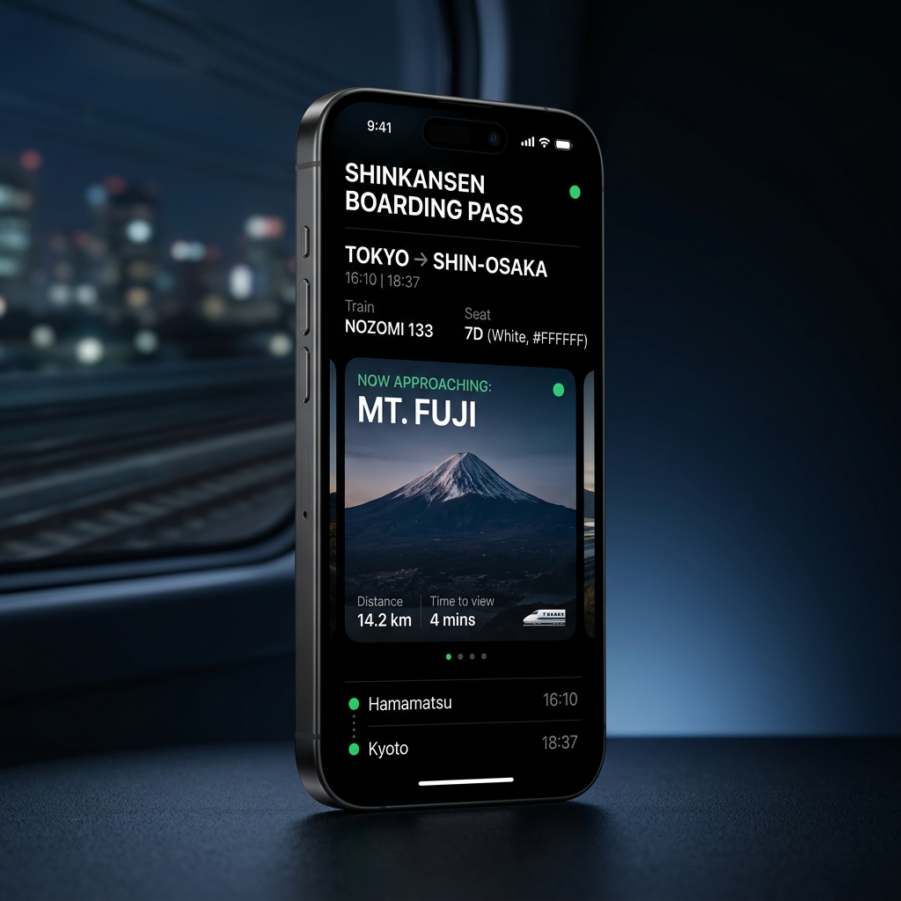
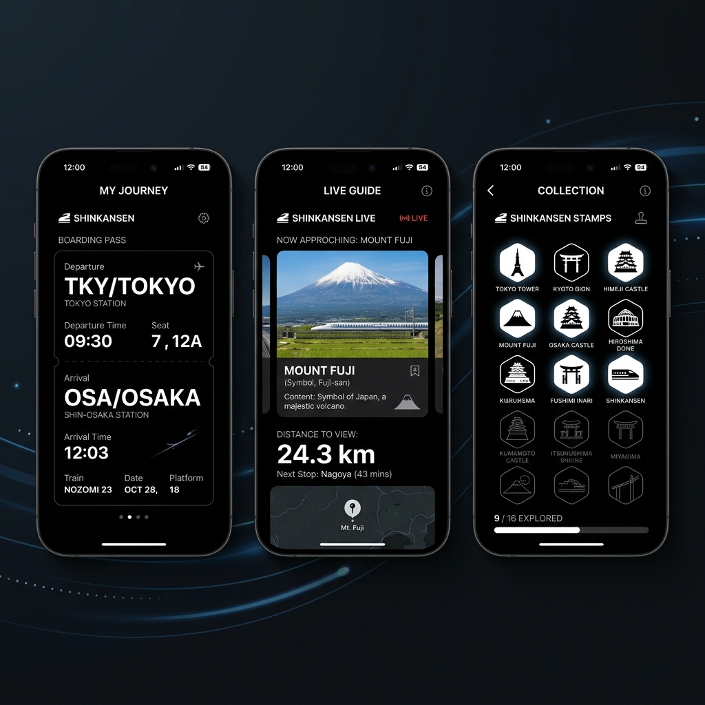

新幹線車窓ガイド
新幹線の旅をもっと豊かに。車窓から見える富士山・姫路城・瀬戸内海など、 日本の絶景をリアルタイムでガイドします。

新幹線の車窓を最大限に楽しむための機能を搭載。 乗車前の準備から、旅の記録まで。
日本全国の主要新幹線路線をカバー。北は北海道から南は鹿児島まで。
ダークモードを基調とした洗練されたUI。 情報は必要なときに、必要な分だけ。

✦ BOARDING NOW ✦
無料ダウンロード。新幹線の旅が、まるで変わります。